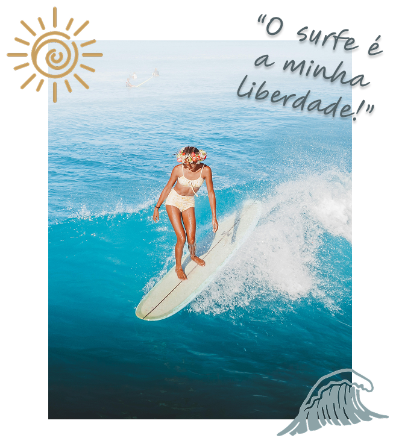
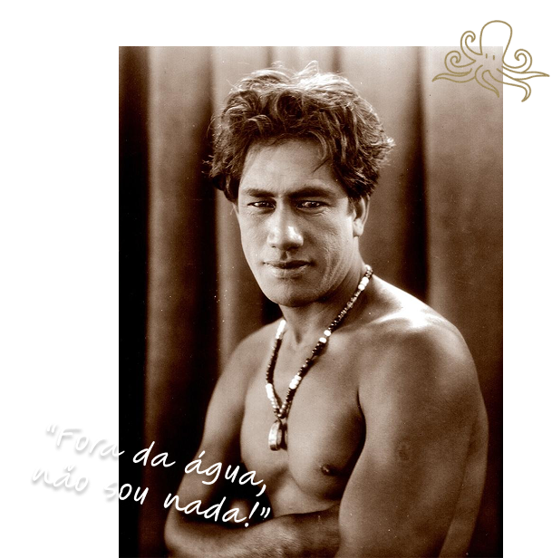
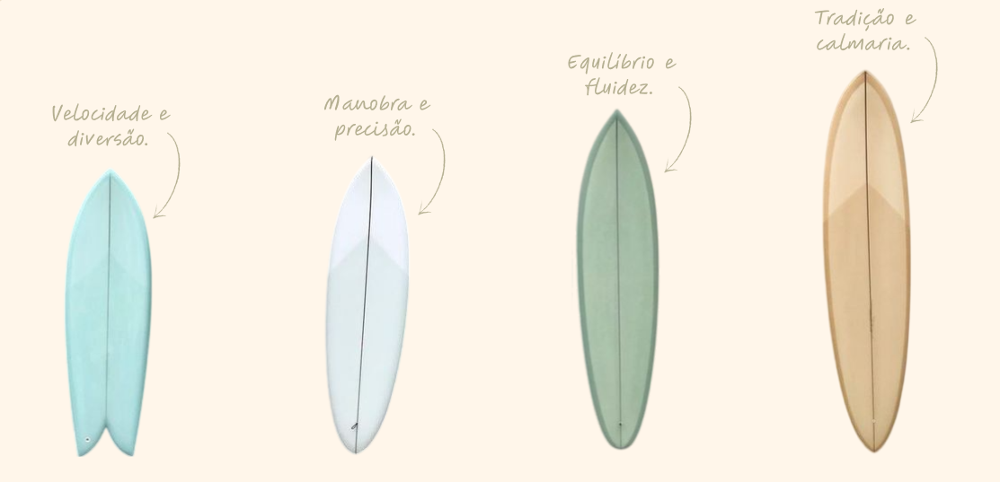

Bem vindo ao Akahai!
O surfe nasceu no coração da Polinésia não apenas como um esporte, mas como uma manifestação sagrada de harmonia entre o homem e a natureza.
O projeto The Surf Journey é um convite para explorar essa jornada simbólica. Mergulhamos na evolução de um estilo de vida que transcende as praias e se transforma em cultura. Aqui, celebramos a transição das pesadas pranchas de madeira para a tecnologia moderna, sem nunca perder a essência do "surf de alma": aquele momento em que o tempo para, o medo se dissolve e a calmaria (Akahai) assume o controle.
VER MAIS →

DUKE
KAHANAMOKU
foi um nadador olímpico havaiano e é amplamente reconhecido como o "pai do surfe moderno". Nascido em Honolulu, destacou-se por sua habilidade no mar, conquistando cinco medalhas olímpicas (ouro e prata) entre 1912 e 1924, além de popularizar o surfe mundialmente, especialmente nos EUA e Austrália, agindo como um embaixador cultural do Havaí.
VER MAIS →Cada prancha tem uma história. Qual é a sua?
